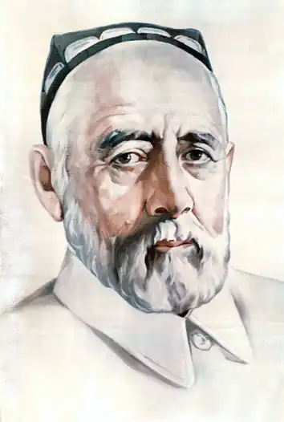
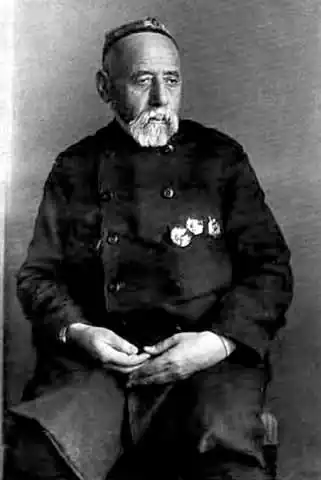

Садриддин Айни (Садриддин Айнӣ, справжнє ім'я Садриддин Саїд-Муродзода; 15 (27) квітня 1878 — 15 липень 1954 Душанбе) — таджицький радянський письменник, громадський діяч і вчений. Лауреат Сталінської премії другого ступеня (1950).
Садриддин Айни народився в селі Сактарі (нині Гіждуванський район, Бухарская область Узбекистану). Мати його походила з села махалай Боло Шафірканского туману (нині Бухарської області Республіки Узбекистан). Айни навчався в бухарских медресе, був близько знайомий з видними бухарським інтелектуалами: Садрі Зіё, дамулла Ікрамча і ін. Садриддин Айни був учасником руху просвітителів — джадидов.
Брав участь у встановленні Радянської влади в Бухарі. За радянських часів займався в основному літературною діяльністю. Склав вперше антологію таджицького національного творчості "Зразки таджицької літератури". З 1951 року академік і перший президент АН Таджицької РСР. Депутат ВР СРСР 3-4 скликань (з 1950 року). Айни був в числі організаторів Самаркандського державного університету в 1927 році, який тоді називався академією. Садриддин Айни крім рідного таджицького прекрасно знав узбецькою мовою і деякі свої твори писав на обох мовах. Він вніс значний вклад в літературу обох народів. Його основні праці: "Одіна" (опублікований в 1924, "Дохунда" (опублікований в 1930), "Раби" (1934), "Спогади" ( "Бухара") (1949-1954). Автор праць з історії та літератури народів Середньої Азії. Попутно Айни працює над складанням антології "Зразки таджицької літератури", вона включає в себе кращі зразки поезії, починаючи від Рудаки і до початку XX століття, Джадіди-пантюркісти заперечували історію таджицького народу і відмовляли таджиків в праві вважатися нацією. Ось Садриддин Айни цієї антологією і довів існування таджицької нації, її історії та її права мати свою республіку. Сам письменник каже, що "твір на основі історичних факсів зірвало завісу з підступів і домагань пантюркістов і наклало на них печатку мовчання ..." Однак пантюркісти, що засіли в редакції газет і журналів, у видавництві, в друкованих органах, підняли галас навколо одного з віршів Рудакі, нібито вихваляти еміра, і зажадали вилучити з обігу антологію. Москва, російські літературознавці, російські письменники підтримали Садриддин Айни. Адже право на самовизначення нації вже перемогло, і в 1929 році утворилася Таджицька РСР зі своєю національною інтелігенцією і своїми національними письменниками: Садриддин Айни, Абдулькасімом Лахути, Абдулло Вохідом Мунзімом, Пайравом Сулаймоні, Мухамеджоном Рахімі, Мухиддінов Амін-заде і іншими. Учасник розтину гробниці Тамерлана 1941 році. С. Айні помер 15 липня 1954 року в Душанбе. Нагороди і премії — Сталінська премія другого ступеня (1950) — за книгу "Спогади" ("Бухара"); — три ордени Леніна; — орден Трудового Червоного Прапора; — заслужений діяч науки Таджицької РСР; — почесний академік Академії наук Узбецької РСР; — Герой Таджикистану.